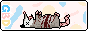
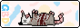

sobre o autor
me chamo yuri, tenho 18 anos. faço algumas coisas relacionadas a computação no meu tempo livre, de projetos acadêmicos, provas de conceito a coisas mais bobas, por diversão, como esse site.
sobre o site
o clarim dazar é uma forma de arranjar o que eu penso de forma mais independente, como escrever em um diário, mas publicamente. a ideia surgiu como uma forma de me expressar sem a exposição e toxicidade que as redes sociais trazem.
na navegação, o site se divide em dazeets e artigos, representando, respectivamente, linhas de pensamentos mais curtas (como tweets) e pequenos artigos que buscam expressar ideias mais estruturadas.
franquia dazar
dazar eh uma agência de inteligência estrangeira, mas estamos produzindo outras coisas..


 
